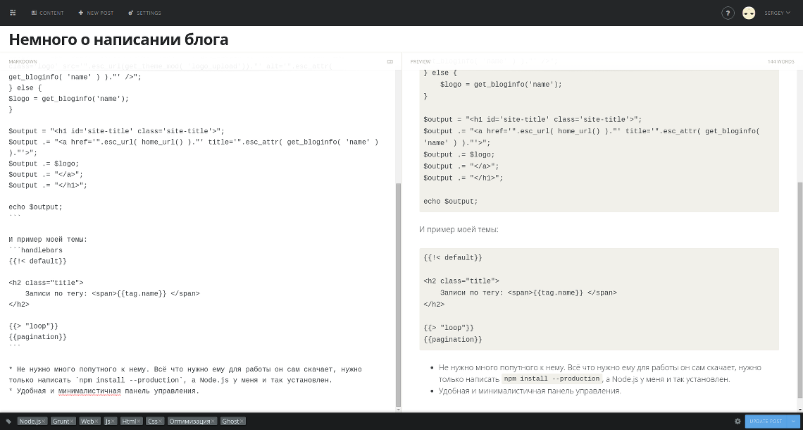
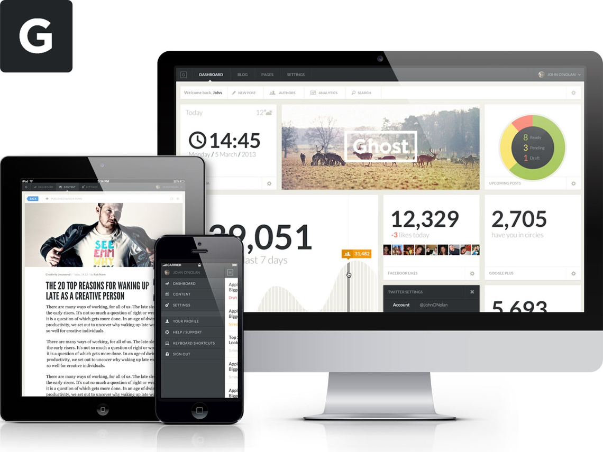

Почему Ghost
Всем привет! Решил завести свой блог, но не просто на Wordpress или подобный CMS, а на Ghost. Выбирал я движок для статического блога и многие части Wordress и таких же больших систем мне были просто не нужны, хотя можно было взять что угодно :) . Вот почему я выбрал именно его.
- Написан на Javascript (Node.js) , а я его неплохо знаю и могу что-то сам доделать (так и случилось)
- Нормальное написание тем (Используется Handlebars) , а не код вперемешку со стилями как в Wordpress.
Пример темы Wordpress:
if ( get_theme_mod( 'logo_upload') ) {
$logo = "<span class='screen-reader-text'>" . get_bloginfo('name') . "</span><img class='logo' src='".esc_url(get_theme_mod( 'logo_upload'))."' alt='".esc_attr( get_bloginfo( 'name' ) )."' />";
} else {
$logo = get_bloginfo('name');
}
$output = "<h1 id='site-title' class='site-title'>";
$output .= "<a href='".esc_url( home_url() )."' title='".esc_attr( get_bloginfo( 'name' ) )."'>";
$output .= $logo;
$output .= "</a>";
$output .= "</h1>";
echo $output;
И пример моей темы:
{{!< default}}
<h2 class="title">
Записи по тегу: <span>{{tag.name}} </span>
</h2>
{{> "loop"}}
{{pagination}}
- Не нужно много попутного к нему. Всё что нужно ему для работы он сам скачает, нужно только написать
npm install --production, а Node.js у меня и так установлен. - Удобная и минималистичная панель управления. 
Минусы
- Из коробки не поддерживает генерацию в статические файлы (Набор файлов, чтобы загрузить на любой бесплатный хостинг)
- Нет автоматического изменения размера изображения и их оптимизации
- Нет менеджера изображений (просто идет разделение по дате
/content/images/2015/08/porsche.jpeg) - Код написан хорошо, но написан для использования в их платформе и сделать шаг вправо, шаг влево уже не так просто, но можно :)
Вывод
Ghost идеально подойдёт человеку(или людям, т.к. тут есть разделение на пользователей), который чуть-чуть знаком с IT, знает что такое хостинг и консоль и хочет вести свой блог (Возможно даже не маленький, но простой).

В следующий постах напишу, как сделать из любой CMS статический сайт и оптимизировать его по максимум.